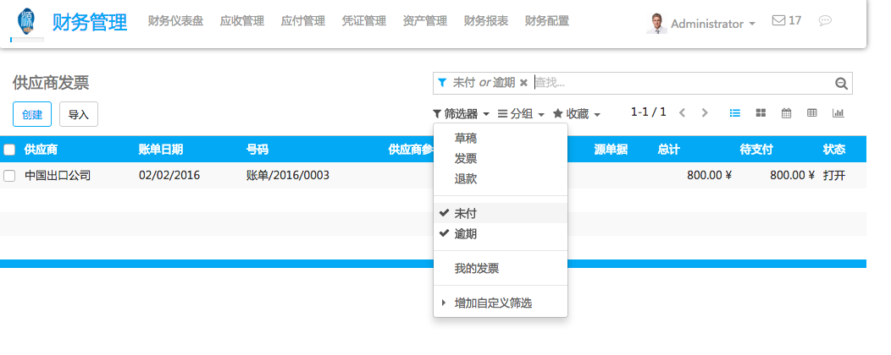

When you get hundreds of vendor bills per month with each of them having different payment terms, it could be complex to follow what you have to pay and when. Paying your vendors too early can decrease your cash availabilities and paying too late can lead to extra charges.
Fortunately, YuanCloud provides you the right tools to manage payment orders to vendors efficiently.
Configuration: payment terms
In order to track the vendor conditions, we use payment terms in YuanCloud. Payment terms allow to keep track of the conditions to compute the due date on an invoice. As an example, a payment term can be:
- 50% within 30 days
- 50% within 45 days
To create your most common payment terms, use the menu: in the Accounting application. The following example show a payment term of 30% directly and the balance after 30 days.
Once payment terms are defined, you can assign them to your vendor by default. Set the Vendor Payment Term field on the Accounting tab of a vendor form. That way, every time you will purchase to this vendor, YuanCloud will propose you automatically the right payment term.
注解
If you do not set a specific payment term on a vendor, you will still be able to set a specific payment term on the vendor bill.
Forecast bills to pay with the Aged Payables report
In order to track amounts to be paid to the vendors, use the Aged Payable report. You can get it from the Reports menu of the Accounting application. This report gives you a summary per vendor of the amounts to pay, compared to their due date (the due date being computed on each bill using the payment term).
This reports tells you how much you will have to pay within the next months.
选择要支付的账单
Using the menu , you can get a list of vendor bills. Using the advanced filters, you can list all the bills that you should pay or the bills that are overdue (you are late on the payment).
From this screen, you can also switch to the pivot table or the graph view to get statistics on the amount due over the next month, using the group by "Due Date" feature.